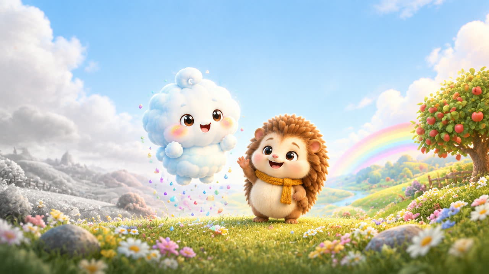

Nubolín
La nubecita que llena el mundo de colores
En el Valle de Algodón, el Señor Bruma se llevó todos los colores. Nubolín y sus amigos Pino, Tita y Coco los recuperan uno por uno: cada episodio enseña un color, a contar del 1 al 5 y un valor como pedir ayuda, ser valiente o compartir. Contamos juntos: 1, 2, 3… ¡PUF!
Son videos educativos para niños de 2 a 6 años, con ritmo tranquilo y sin sustos, hechos para ver en familia. Todo el contenido está marcado en YouTube como "creado para niños".